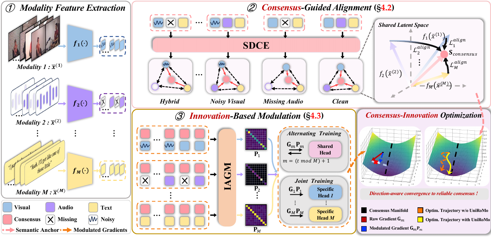
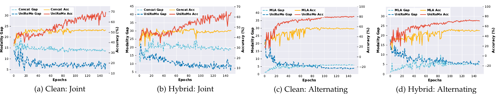
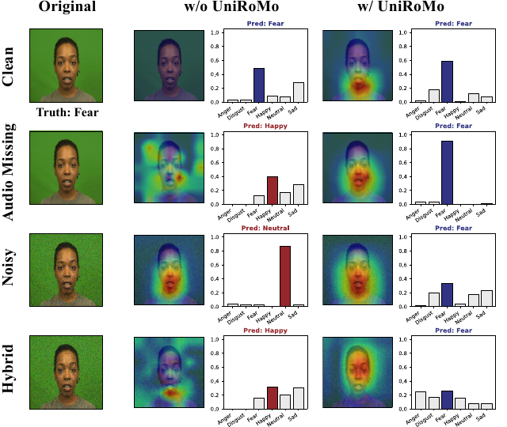
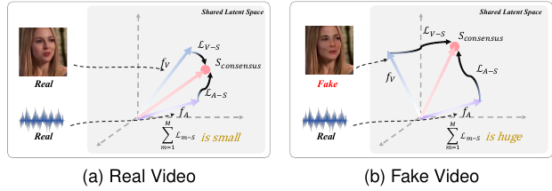
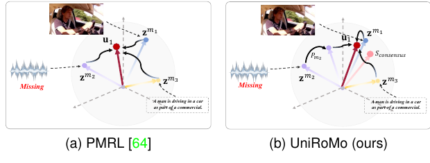

SDCE
Structure-guided dynamic consensus
Builds a reliability-weighted shared semantic anchor from modality availability and cross-modal structural consistency.
UniRoMo
1Zhejiang University 2National University of Singapore
Submitted
The training code will be released upon acceptance of the paper.
01
Multimodal learning integrates complementary information from heterogeneous modalities, yet real-world multimodal data are often incomplete or corrupted by noise, substantially impairing the effectiveness and reliability of multimodal models. Early approaches typically address a single degradation type at a time, whereas real-world multimodal data may involve multiple coexisting degradations whose patterns are unknown a priori. A few recent efforts have begun to explore unified robust multimodal learning to jointly handle multiple degradation types, but they rely on clean or modality-complete references and auxiliary repair modules, hindering their broader applicability. To address these limitations, we rethink unified robust multimodal learning from a novel optimization perspective and propose UniRoMo, a consensus-innovation optimization framework that guides low-quality modalities toward reliable shared semantics, enabling direct learning from degraded multimodal data beyond representation-level repair or compensation. Specifically, structure-guided dynamic consensus estimation constructs a reliable shared semantic anchor from cross-modal structural consistency, while innovation-based anisotropic gradient modulation uses accumulated deviations from this anchor to modulate gradient directions and mitigate persistent structural drift under low-quality modalities. Extensive experiments on four widely used benchmarks demonstrate that UniRoMo achieves competitive performance across various modality degradation and clean settings under both joint and alternating optimization paradigms. Its consistent gains across conventional encoder backbones and multimodal large language models further demonstrate strong robustness and architectural generalizability, with only marginal additional computational overhead. Ablation studies and additional analyses further validate the effectiveness of the proposed components and the broad applicability of UniRoMo across downstream tasks.
02
Consensus provides reliable semantic guidance; innovation regulates unreliable optimization directions.

SDCE
Builds a reliability-weighted shared semantic anchor from modality availability and cross-modal structural consistency.
IAGM
Uses accumulated modality-consensus deviations to attenuate persistently inconsistent update directions.
03
UniRoMo improves cross-modal alignment across clean and low-quality settings.

| Benchmark | Modalities | Robust setting | UniRoMo |
|---|---|---|---|
| CREMA-D | Audio + Visual | Hybrid | 81.99% Alternating |
| AVE | Audio + Visual | Hybrid | 61.19% Alternating |
| MVSA-Single | Visual + Text | Hybrid | 80.54% Joint |
| IEMOCAP | Audio + Visual + Text | 60% missing | 70.28% Alternating |
| Benchmark | Frozen Backbone | Clean | Noisy | Missing | Hybrid |
|---|---|---|---|---|---|
| CREMA-D | Ola-7B | 74.06% | 73.79% | 60.48% | 60.35% |
| MVSA-Single | LLaVA-7B | 79.77% | 80.70% | 81.31% | 81.50% |
All MLLM backbone parameters are frozen; only the classifier head is trainable.
04

CREMA-D
Without UniRoMo, degraded modalities lead to diffuse attention and incorrect emotion predictions. UniRoMo preserves discriminative facial regions and maintains the correct prediction across missing, noisy, and hybrid inputs.
Additional scene-level and object-level MVSA visualizations are provided in the supplementary material.
05
The same consensus-innovation principle transfers to downstream tasks with different objectives.

Fake Video Detection
UniRoMo reaches 79.53 AUC in zero-shot cross-dataset evaluation on FakeAVCeleb using only CREMA-D training data.

Multimodal Retrieval
Consensus-guided replacement preserves shared semantic structure and improves retrieval under visual missing rates up to 80%.
06
Inference
Training
08
@misc{jiang2026uniromo,
title = {UniRoMo: Rethinking Unified Robust Multimodal Learning via Consensus-Innovation Optimization},
author = {Jiang, Yue and Xu, Yunqiu and Meng, Wenchao and Yang, Qinmin and Chen, Jiming},
year = {2026},
note = {Submitted}
}